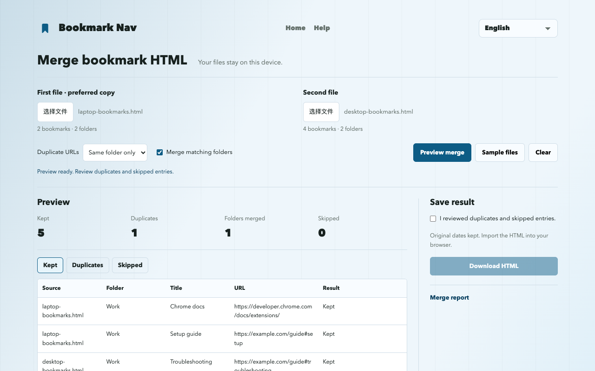

How to merge Chrome bookmark HTML files
To merge Chrome bookmarks from two exports, choose both HTML files, preview the duplicates, download the combined file and import it into Chrome. This combines exported files, not Chrome accounts or browser sync.
Merge bookmark filesExport, merge and import
- Open chrome://bookmarks. In the bookmark manager menu, choose Export bookmarks. Keep the original HTML as a backup; repeat for the second library.
- Open the web merger and choose the two exports. The first file is the preferred copy when a duplicate is removed.
- Start with same-folder duplicate removal. Preview kept, removed and skipped entries before changing the rules.
- Confirm the preview and download the merged HTML. Nothing is written to your browser by the website.
- Import the HTML from the Chrome bookmark manager menu. Use an empty test profile first if you want to check the result without adding duplicates to your main library.
A reproducible six-link example
Use Sample files in the tool: the two files contain six links. The default preview keeps five and removes one same-folder duplicate. The same URL in Learning and Work stays in both folders; #setup and #troubleshooting stay distinct.

What is kept and what is skipped?
The first file wins when a duplicate is removed. URLs match exactly; parameters, #fragments, protocol and www differences stay distinct. By default, duplicate URLs in different folders are kept.
Folders merge only when the name and parent path match. With folder merging off, each source gets a separate folder; repeated sibling names get suffixes and bookmark-bar markers are removed.
The download includes the full hierarchy, supported URLs, titles and available ADD_DATE / LAST_MODIFIED values. It excludes icons, descriptions, tags and sync metadata. Missing or unsupported URLs, including javascript: and data:, are listed as skipped. Links are not checked for availability.
Backups and browser import limits
Keep both original exports and back up the destination browser before importing. Importing adds bookmarks; repeating the import may create more copies. The downloaded HTML is not an automatic replacement for your existing library.
UTF-8 Netscape bookmark HTML. Each file: up to 10 MiB, 25,000 bookmarks/folders and 64 folder levels, excluding the outer list. JSON and plist are not supported.
A merged output can exceed the input limits and may not be readable again by this tool. Separate-source folders add one level. Keep your original exports.
Chrome drops empty folders and resets folder dates. Bookmark titles, URLs and added dates are retained. Bookmark-bar markers may map to the native bookmark bar.
Website tool versus extension import
The website works without an extension and only downloads HTML. Direct addition, backup and guarded undo are prepared for extension 1.3.1; do not assume the public store version includes them yet. Check your installed version and look for Import & merge. Direct additions create a separate folder and use current dates, not original HTML dates.
Get Bookmark NavCommon questions
Are bookmark files uploaded?
Files are processed in this tab’s memory, without uploads or analytics. Refreshing or leaving clears the loaded files. Downloads stay on your device.
Does this merge Chrome accounts or sync libraries?
No. It combines two exported HTML files locally. Chrome sync remains controlled by your own browser settings.
Are dates and empty folders preserved?
Original dates kept. Import the HTML into your browser.
Chrome drops empty folders and resets folder dates. Bookmark titles, URLs and added dates are retained. Bookmark-bar markers may map to the native bookmark bar.